Hands-on Exercise 5c - Visualising Correlation Matrix
5.1 Overview
Correlation analysis is useful when we want to understand how several numerical variables are related to each other. Instead of checking many scatter plots one by one, a correlation matrix summarises the strength and direction of relationships between variable pairs.
In this exercise, we will use the WHData-2018.csv dataset. The dataset contains country-level indicators from the World Happiness data, including happiness score, GDP per capita, social support, healthy life expectancy, freedom, generosity, and perceptions of corruption.
By the end of this exercise, we will be able to:
- import and prepare World Happiness data,
- compute a correlation matrix,
- visualise correlation values using a heatmap,
- identify strong positive and negative relationships,
- use scatter plots to inspect selected relationships,
- create a small extra ranking chart to support interpretation.
ImportantImportant
Correlation measures association, not causation.
A high correlation means two variables move together, but it does not prove that one variable causes the other.
5.2 Getting Started
5.2.1 Installing and launching R packages
This exercise uses tidyverse for data preparation, DT for interactive tables, plotly for interactive charts, and janitor for cleaning column names.
pacman::p_load(
tidyverse,
DT,
janitor,
plotly,
scales
)5.2.2 Importing data
The dataset used in this exercise is WHData-2018.csv.
Rows: 156
Columns: 12
$ Country <chr> "Albania", "Bosnia and Herzegovina", "B…
$ Region <chr> "Central and Eastern Europe", "Central …
$ `Happiness score` <dbl> 4.586, 5.129, 4.933, 5.321, 6.711, 5.73…
$ `Whisker-high` <dbl> 4.695, 5.224, 5.022, 5.398, 6.783, 5.81…
$ `Whisker-low` <dbl> 4.477, 5.035, 4.844, 5.244, 6.639, 5.66…
$ Dystopia <dbl> 1.462, 1.883, 1.219, 1.769, 2.494, 1.45…
$ `GDP per capita` <dbl> 0.916, 0.915, 1.054, 1.115, 1.233, 1.20…
$ `Social support` <dbl> 0.817, 1.078, 1.515, 1.161, 1.489, 1.53…
$ `Healthy life expectancy` <dbl> 0.790, 0.758, 0.712, 0.737, 0.854, 0.73…
$ `Freedom to make life choices` <dbl> 0.419, 0.280, 0.359, 0.380, 0.543, 0.55…
$ Generosity <dbl> 0.149, 0.216, 0.064, 0.120, 0.064, 0.08…
$ `Perceptions of corruption` <dbl> 0.032, 0.000, 0.009, 0.039, 0.034, 0.17…csv_file <- list.files(pattern = "WHData-2018.*\\.csv$")[1]
wh_raw <- read_csv(csv_file, show_col_types = FALSE)
glimpse(wh_raw)The dataset is read from the current exercise folder. Using list.files() makes the render more stable because the code does not depend on manually typing the full file path.
5.2.3 Cleaning column names
The original dataset contains names such as Happiness score, GDP per capita, and Healthy life expectancy. These names are cleaned to make them easier to use in R.
[1] "country" "region"
[3] "happiness_score" "whisker_high"
[5] "whisker_low" "dystopia"
[7] "gdp_per_capita" "social_support"
[9] "healthy_life_expectancy" "freedom_to_make_life_choices"
[11] "generosity" "perceptions_of_corruption" wh <- wh_raw %>%
janitor::clean_names()
names(wh) [1] "country" "region"
[3] "happiness_score" "whisker_high"
[5] "whisker_low" "dystopia"
[7] "gdp_per_capita" "social_support"
[9] "healthy_life_expectancy" "freedom_to_make_life_choices"
[11] "generosity" "perceptions_of_corruption" After cleaning, names such as Happiness score become happiness_score, and GDP per capita becomes gdp_per_capita.
5.2.4 Quick data preview
DT::datatable(
head(wh, 12),
rownames = FALSE,
class = "compact stripe hover",
options = list(pageLength = 12, scrollX = TRUE),
width = "100%"
)5.3 Preparing Data for Correlation Analysis
Only numerical variables should be included in the correlation matrix. Text variables such as country and region are useful for labelling, but they should not be used inside the correlation calculation.
5.3.1 Selecting numerical variables
wh_numeric <- wh %>%
select(
happiness_score,
whisker_high,
whisker_low,
dystopia,
gdp_per_capita,
social_support,
healthy_life_expectancy,
freedom_to_make_life_choices,
generosity,
perceptions_of_corruption
) %>%
drop_na()
DT::datatable(
head(wh_numeric, 12),
rownames = FALSE,
class = "compact stripe hover",
options = list(pageLength = 12, scrollX = TRUE),
width = "100%"
)
TipWhat can we learn?
Correlation analysis should use numerical variables only.
If categorical variables such as country or region are included, the calculation will not be meaningful.
5.3.2 Computing correlation matrix
cor_matrix <- cor(
wh_numeric,
use = "pairwise.complete.obs",
method = "pearson"
)
cor_long <- as.data.frame(as.table(cor_matrix)) %>%
rename(
variable_x = Var1,
variable_y = Var2,
correlation = Freq
) %>%
mutate(
variable_x = as.character(variable_x),
variable_y = as.character(variable_y)
)
DT::datatable(
cor_long %>%
mutate(correlation = round(correlation, 3)),
rownames = FALSE,
class = "compact stripe hover",
options = list(pageLength = 12, scrollX = TRUE),
width = "100%"
)The correlation values range from -1 to 1. A value close to 1 indicates a strong positive relationship. A value close to -1 indicates a strong negative relationship.
5.4 Visualising Correlation Matrix
A correlation heatmap makes the matrix easier to read. Strong positive and negative relationships can be identified quickly using colour.
5.4.1 Basic correlation heatmap
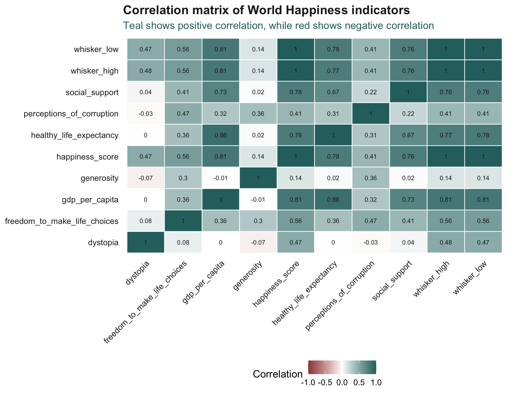
ggplot(
cor_long,
aes(
x = variable_x,
y = variable_y,
fill = correlation
)
) +
geom_tile(colour = "white", linewidth = 0.4) +
geom_text(
aes(label = round(correlation, 2)),
size = 2.8,
colour = my_dark
) +
scale_fill_gradient2(
low = my_red,
mid = "white",
high = my_teal,
midpoint = 0,
limits = c(-1, 1)
) +
labs(
title = "Correlation matrix of World Happiness indicators",
subtitle = "Teal shows positive correlation, while red shows negative correlation",
x = NULL,
y = NULL,
fill = "Correlation"
) +
theme_yy +
theme(
axis.text.x = element_text(angle = 45, hjust = 1),
panel.grid = element_blank()
)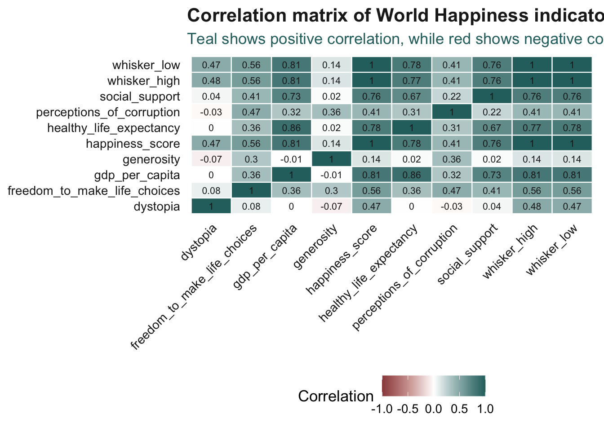
The heatmap provides a compact overview of the relationships between happiness indicators. It is especially useful when many variables need to be compared at once.
5.4.2 Reordering the correlation heatmap
The first heatmap follows the original column order. To make the pattern clearer, the next heatmap reorders variables using hierarchical clustering.
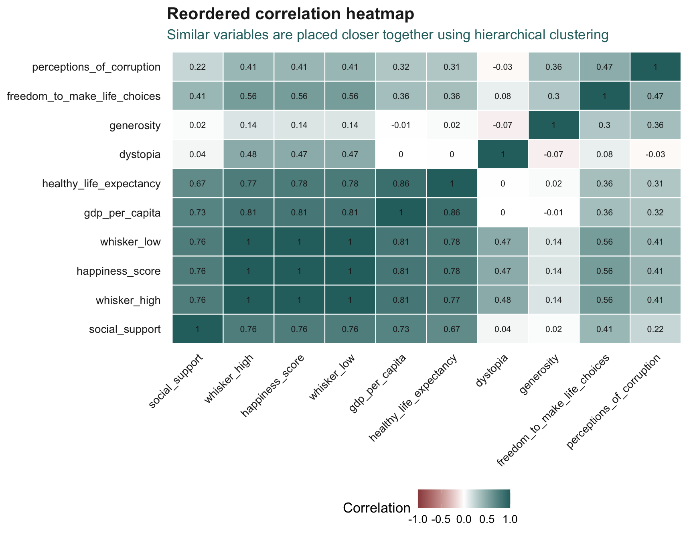
cor_dist <- as.dist(1 - abs(cor_matrix))
cor_order <- hclust(cor_dist)$order
ordered_vars <- colnames(cor_matrix)[cor_order]
cor_long_ordered <- cor_long %>%
mutate(
variable_x = factor(variable_x, levels = ordered_vars),
variable_y = factor(variable_y, levels = ordered_vars)
)
ggplot(
cor_long_ordered,
aes(
x = variable_x,
y = variable_y,
fill = correlation
)
) +
geom_tile(colour = "white", linewidth = 0.4) +
geom_text(
aes(label = round(correlation, 2)),
size = 2.8,
colour = my_dark
) +
scale_fill_gradient2(
low = my_red,
mid = "white",
high = my_teal,
midpoint = 0,
limits = c(-1, 1)
) +
labs(
title = "Reordered correlation heatmap",
subtitle = "Similar variables are placed closer together using hierarchical clustering",
x = NULL,
y = NULL,
fill = "Correlation"
) +
theme_yy +
theme(
axis.text.x = element_text(angle = 45, hjust = 1),
panel.grid = element_blank()
)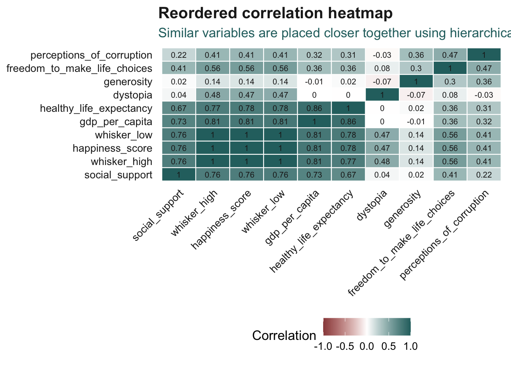
Reordering the matrix helps the reader find clusters of related indicators. This is useful when the original variable order does not reveal a clear structure.
NoteReading the reordered matrix
Variables placed close together are not automatically causal.
They are simply more similar in terms of their correlation pattern.
5.5 Identifying Strong Correlations
The matrix gives a full overview, but sometimes we want to list the strongest relationships directly.
5.5.1 Strongest positive and negative correlations
strong_cor <- cor_long %>%
filter(variable_x != variable_y) %>%
mutate(
pair_id = map2_chr(
variable_x,
variable_y,
~ paste(sort(c(.x, .y)), collapse = " | ")
)
) %>%
distinct(pair_id, .keep_all = TRUE) %>%
arrange(desc(abs(correlation))) %>%
mutate(
correlation = round(correlation, 3)
)
DT::datatable(
head(strong_cor, 15) %>%
select(variable_x, variable_y, correlation),
rownames = FALSE,
class = "compact stripe hover",
options = list(dom = "t", scrollX = TRUE),
width = "100%"
)This table removes duplicated pairs and keeps only the strongest relationships. It helps turn the heatmap into a more direct interpretation.
5.5.2 Bar chart of strongest correlations
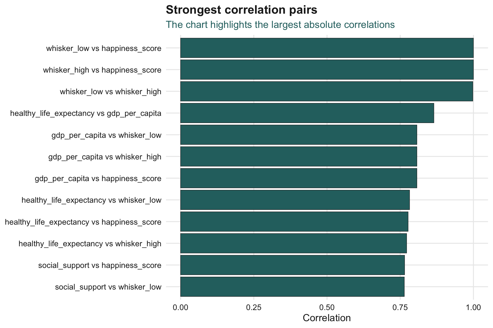
top_cor_plot <- strong_cor %>%
slice_head(n = 12) %>%
mutate(
pair = paste(variable_x, "vs", variable_y),
pair = fct_reorder(pair, abs(correlation))
)
ggplot(
top_cor_plot,
aes(
x = pair,
y = correlation,
fill = correlation > 0
)
) +
geom_col(
colour = my_dark,
linewidth = 0.25
) +
coord_flip() +
scale_fill_manual(
values = c(
"TRUE" = my_teal,
"FALSE" = my_red
),
guide = "none"
) +
labs(
title = "Strongest correlation pairs",
subtitle = "The chart highlights the largest absolute correlations",
x = NULL,
y = "Correlation"
) +
theme_yy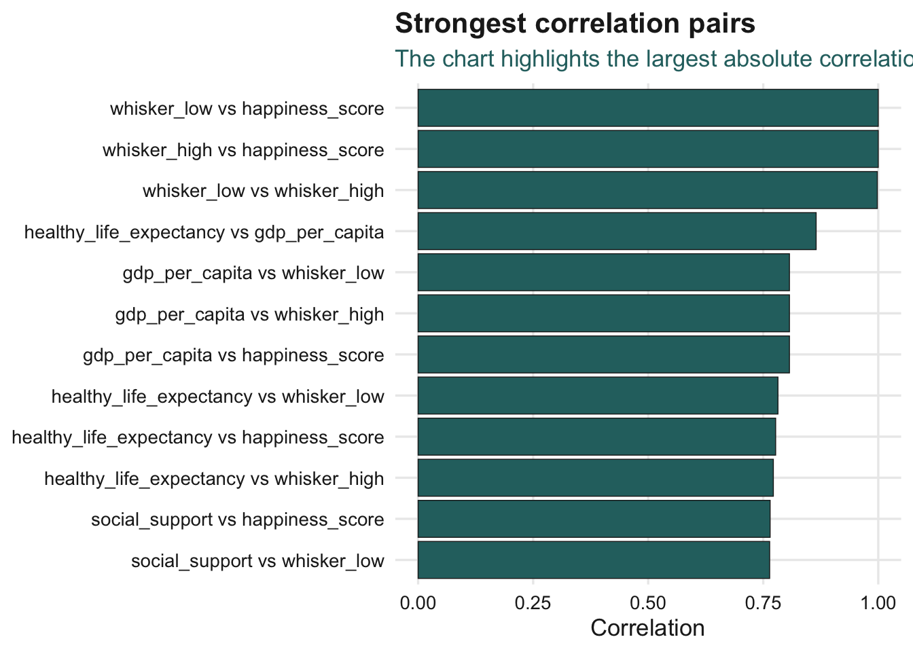
This section adds a simple ranked view. It is easier to read than scanning the full matrix when the goal is to find the strongest relationships quickly.
5.6 Correlation with Happiness Score
Since the dataset focuses on happiness, it is useful to isolate the variables most related to happiness_score.
5.6.1 Ranking correlations with happiness score
happiness_cor <- cor_long %>%
filter(
variable_x == "happiness_score",
variable_y != "happiness_score"
) %>%
arrange(desc(correlation)) %>%
mutate(
correlation = round(correlation, 3)
)
DT::datatable(
happiness_cor,
rownames = FALSE,
class = "compact stripe hover",
options = list(dom = "t", scrollX = TRUE),
width = "100%"
)5.6.2 Plotting correlations with happiness score
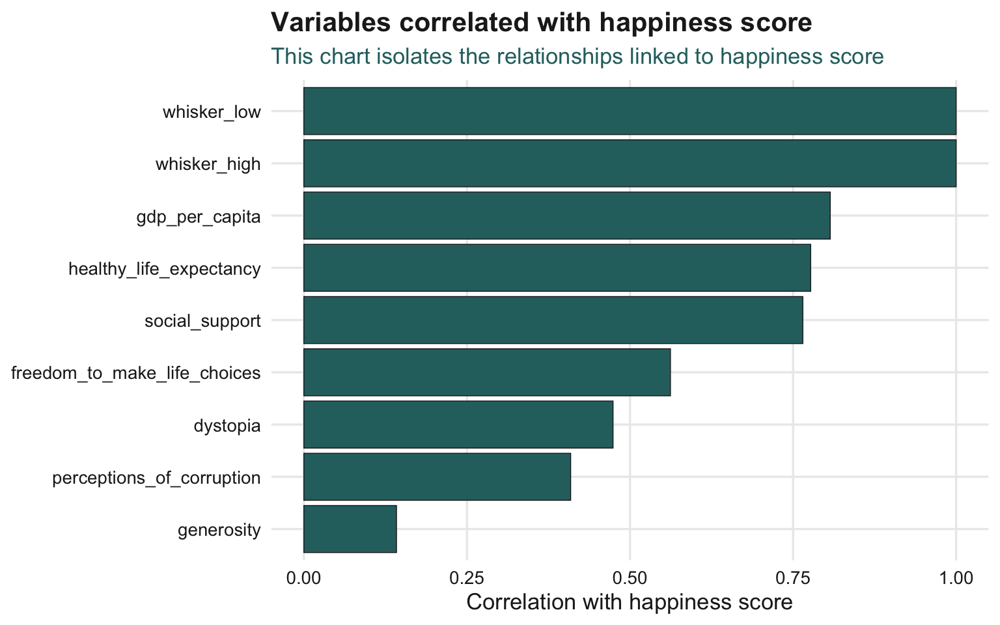
ggplot(
happiness_cor,
aes(
x = fct_reorder(variable_y, correlation),
y = correlation,
fill = correlation > 0
)
) +
geom_col(
colour = my_dark,
linewidth = 0.25
) +
coord_flip() +
scale_fill_manual(
values = c(
"TRUE" = my_teal,
"FALSE" = my_red
),
guide = "none"
) +
labs(
title = "Variables correlated with happiness score",
subtitle = "This chart isolates the relationships linked to happiness score",
x = NULL,
y = "Correlation with happiness score"
) +
theme_yy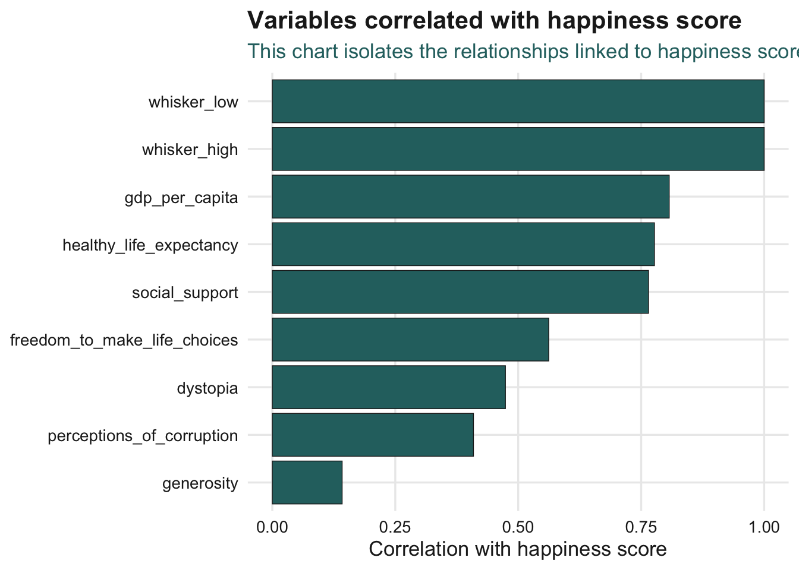
This chart makes the interpretation more focused. Instead of reading the whole matrix, we can directly see which indicators are most closely associated with happiness score.
TipWhat can we learn?
This chart should be read as an exploratory view.
It tells us which variables move with happiness score, but it does not prove causal impact.
5.7 Checking Selected Relationships with Scatter Plots
A correlation number is useful, but it hides the shape of the relationship. Scatter plots help us check whether the relationship is linear, clustered, or affected by outliers.
5.7.1 Happiness score and GDP per capita
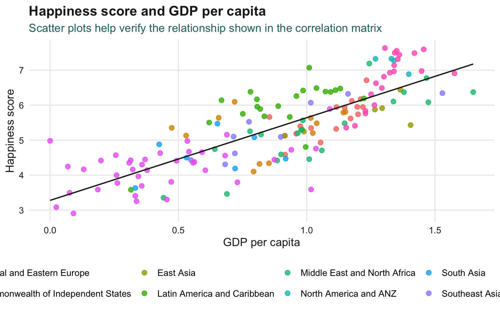
ggplot(
wh,
aes(
x = gdp_per_capita,
y = happiness_score,
colour = region
)
) +
geom_point(size = 2.3, alpha = 0.8) +
geom_smooth(
method = "lm",
se = FALSE,
colour = my_dark,
linewidth = 0.7
) +
labs(
title = "Happiness score and GDP per capita",
subtitle = "Scatter plots help verify the relationship shown in the correlation matrix",
x = "GDP per capita",
y = "Happiness score",
colour = "Region"
) +
theme_yy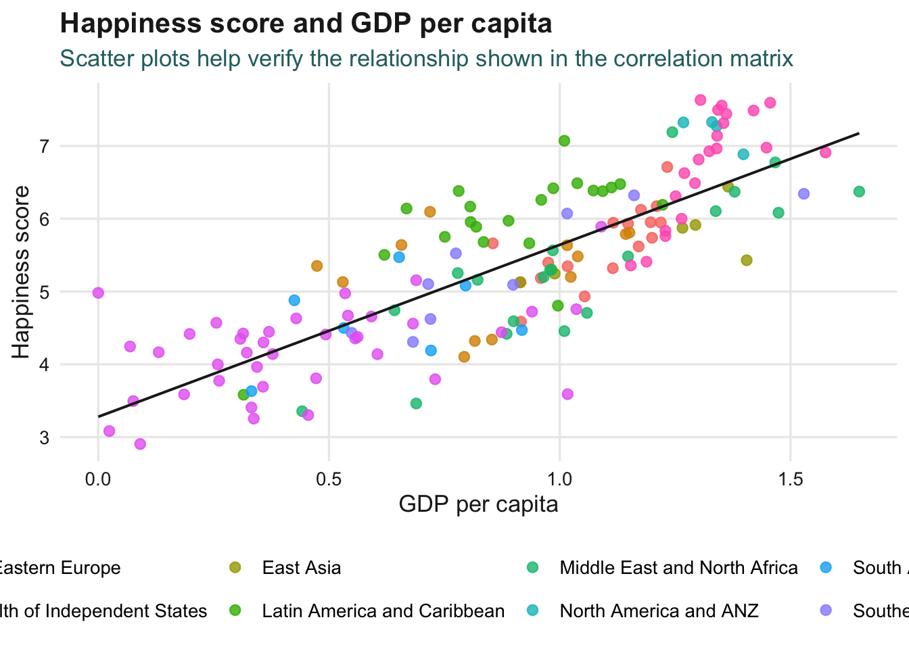
The scatter plot gives a more concrete view of the relationship. It shows whether countries with higher GDP per capita also tend to have higher happiness scores.
5.7.2 Interactive scatter plot
p_interactive <- ggplot(
wh,
aes(
x = gdp_per_capita,
y = happiness_score,
colour = region,
text = paste0(
"Country: ", country,
"<br>Region: ", region,
"<br>Happiness score: ", happiness_score,
"<br>GDP per capita: ", gdp_per_capita,
"<br>Social support: ", social_support,
"<br>Healthy life expectancy: ", healthy_life_expectancy
)
)
) +
geom_point(size = 2.3, alpha = 0.85) +
labs(
title = "Interactive happiness and GDP relationship",
subtitle = "Hover over each point to inspect country-level details",
x = "GDP per capita",
y = "Happiness score",
colour = "Region"
) +
theme_yy
ggplotly(p_interactive, tooltip = "text")The interactive version is useful because it allows country-level inspection without adding many text labels to the static chart.
5.8 Extra Check: Regional Happiness Profile
As a small extension, we compare average happiness score by region. This gives context before interpreting country-level correlations.
5.8.1 Regional average happiness score
region_summary <- wh %>%
group_by(region) %>%
summarise(
countries = n(),
mean_happiness = mean(happiness_score, na.rm = TRUE),
mean_gdp = mean(gdp_per_capita, na.rm = TRUE),
mean_social_support = mean(social_support, na.rm = TRUE),
.groups = "drop"
) %>%
arrange(desc(mean_happiness))
DT::datatable(
region_summary %>%
mutate(
mean_happiness = round(mean_happiness, 2),
mean_gdp = round(mean_gdp, 2),
mean_social_support = round(mean_social_support, 2)
),
rownames = FALSE,
class = "compact stripe hover",
options = list(dom = "t", scrollX = TRUE),
width = "100%"
)5.8.2 Plotting regional average happiness score
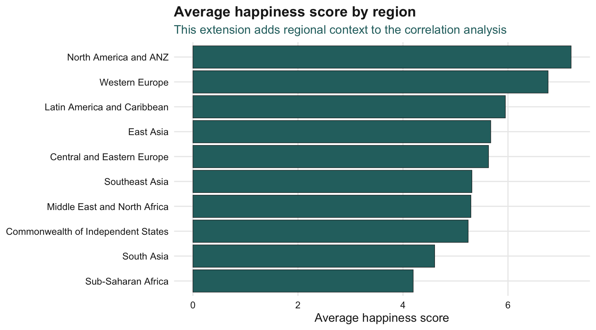
ggplot(
region_summary,
aes(
x = fct_reorder(region, mean_happiness),
y = mean_happiness
)
) +
geom_col(
fill = my_teal,
colour = my_dark,
linewidth = 0.25
) +
coord_flip() +
labs(
title = "Average happiness score by region",
subtitle = "This extension adds regional context to the correlation analysis",
x = NULL,
y = "Average happiness score"
) +
theme_yy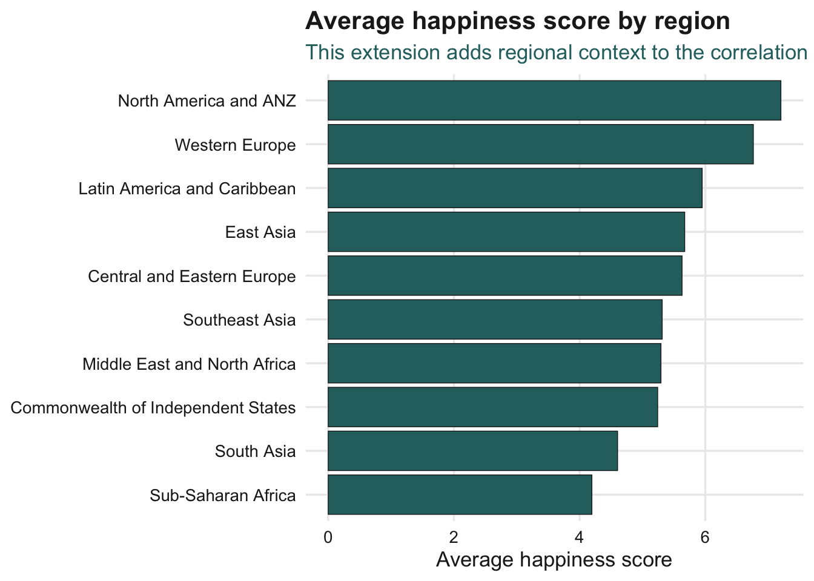
This extra section does not replace the correlation matrix. It adds a simple descriptive layer to help readers understand the regional pattern behind the country-level data.
5.9 Final Takeaway
Correlation matrices are useful for exploring relationships among many numerical variables. The heatmap provides a compact overview, the reordered matrix makes related variables easier to see, and the scatter plot helps verify the shape of selected relationships.
For the World Happiness data, correlation analysis helps identify which indicators move closely with happiness score. However, the results should be interpreted as association, not causal evidence.
TipFinal takeaway
Use correlation visualisation as an exploratory tool.
It is good for finding patterns, but follow-up analysis is needed before making causal claims.
5.10 Reference
This exercise covered:
- importing and preparing World Happiness data,
- selecting numerical variables,
- computing Pearson correlation,
- creating a correlation heatmap,
- reordering a correlation matrix,
- ranking strong correlation pairs,
- focusing on variables related to happiness score,
- checking selected relationships with scatter plots,
- adding regional context as a small extension.